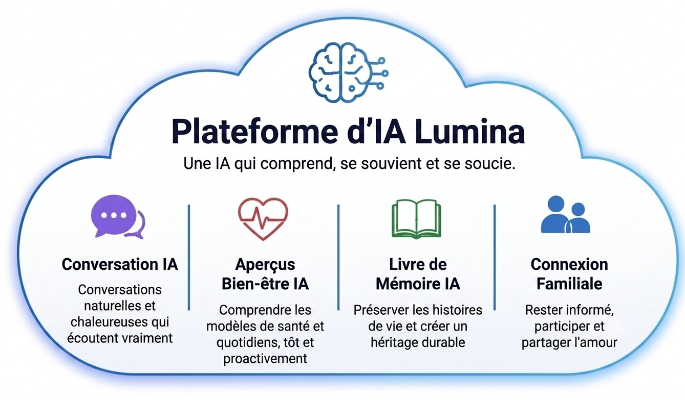
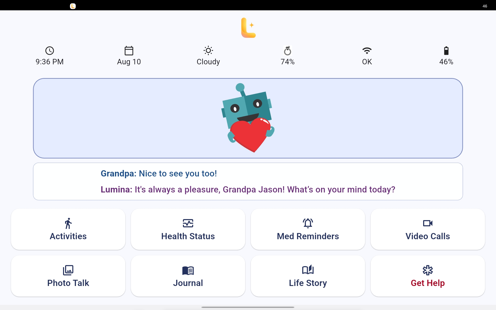
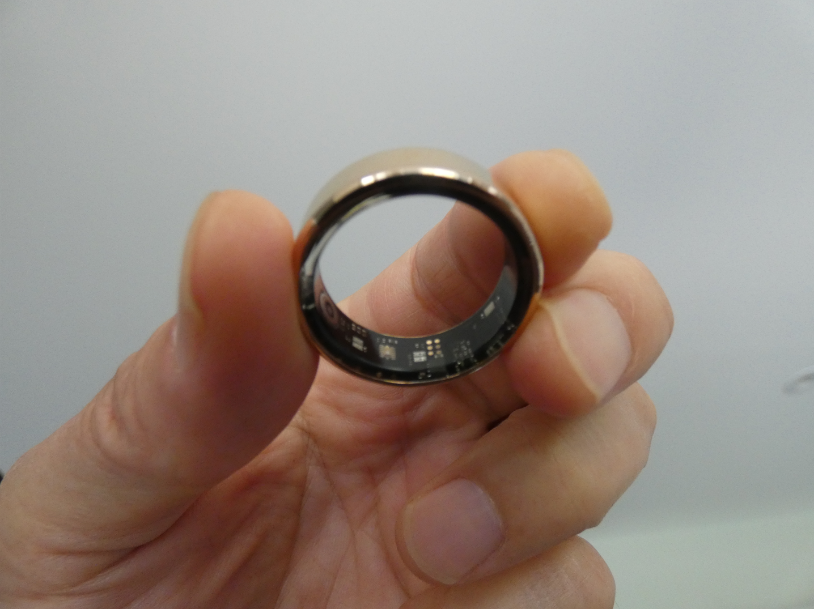
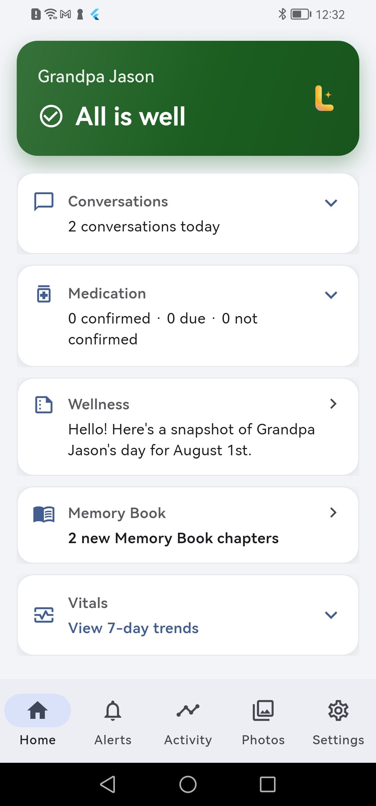
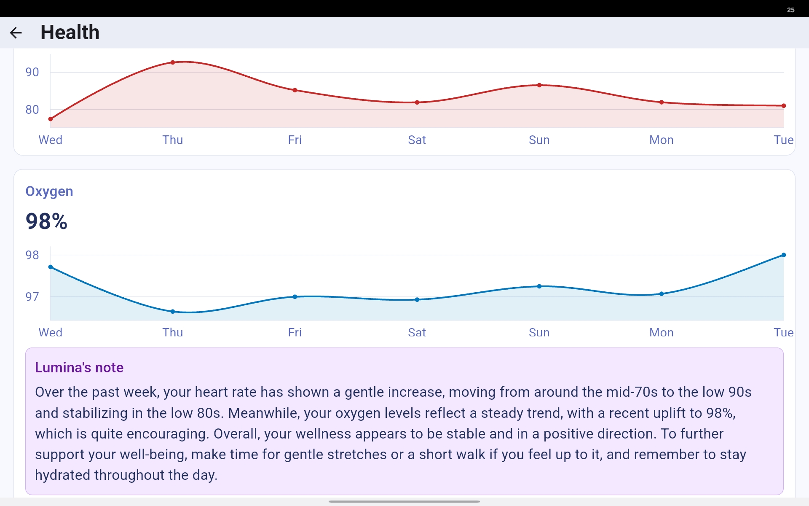
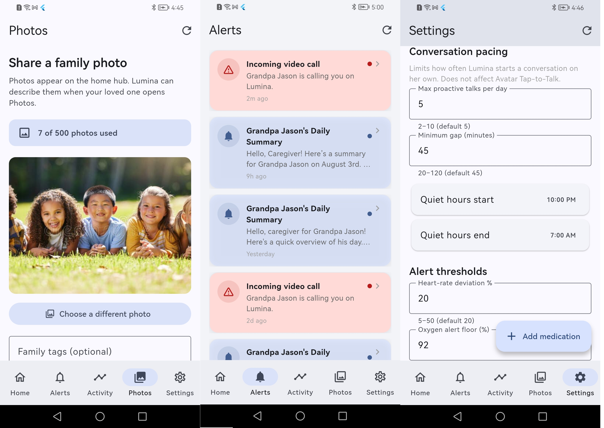

Lumina
A complete companion system for aging at home.
Lumina brings together four connected experiences — Lumina AI Platform, the Lumina Hub, Wearable, and Caregiver App — working together to support everyday connection, wellness, and family involvement.
Core system ready today · Active pilot with Ottawa families

The Intelligence Behind Lumina
Lumina AI Platform combines LLM, STT/TTS, memory, and contextual understanding to create a companion that becomes more helpful over time. Serving as the core engine of the Lumina ecosystem, it connects seniors with their families through empathetic, proactive technology.
Key Features & Capabilities
- AI Conversation: Delivers natural, warm, and attentive interactions for continuous companionship.
- AI Wellness Insights: Analyzes health metrics and daily routines to detect risks early and provide proactive guidance.
- AI Memory Book: Preserves life stories and precious moments, creating a lasting digital legacy.
- Family Connection: Keeps relatives informed, enabling effortless participation and love sharing from anywhere.

Lumina Hub — the heart of the home
A warm, voice-first companion that lives on the kitchen counter or living room table. Your parent simply taps Lumina to talk — natural conversation, gentle reminders, and a friendly presence throughout the day.
- Simple Voice Interaction — tap to talk, no wake words to remember
- Medication & appointment reminders
- Photos, Diary, and Memory Book — everyday moments, preserved
- One-tap Video Call to a caregiver
- Family SOS Alert — one tap to notify family SOS feature alerts designated family caregivers via the app; it is not a 911 emergency dispatch replacement.

Lumina Wearable — always with you
A lightweight ring worn day and night. It quietly tracks the signals that matter — steps, heart rate, oxygen levels, and sleep — and feeds them into the same companion experience, no separate app to check.
- Activity & step tracking
- Heart rate & SpO2 monitoring
- Sleep tracking
- Unusual patterns may trigger a family notification Lumina is a wellness companion, not a medical device.

Lumina Caregiver App — stay close from anywhere
A calm, clear window into your parent's day. No raw data to interpret — just a simple "All is well" view, with the details available when you want them.
- Daily wellness summary, in plain language
- Medication confirmation status
- Memory Book — life stories, automatically preserved
- Two-way messages, photos, and memories
- 7-day activity & vitals trends
Designed for Simplicity.
Powered by Family.
Lumina is designed so older adults can simply use it — no complicated setup, no learning curve.
The experience is intentionally simple for parents. Behind the scenes, family members can personalize and manage more advanced features through the Lumina Caregiver App, including conversation preferences, wellness thresholds, routines, and care settings — whether they are nearby or miles away.

